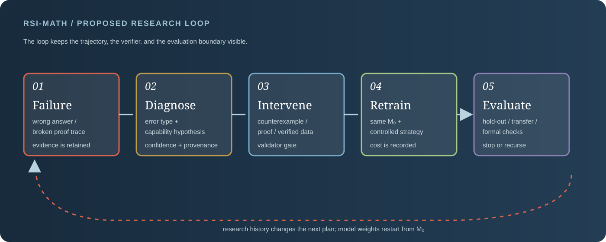
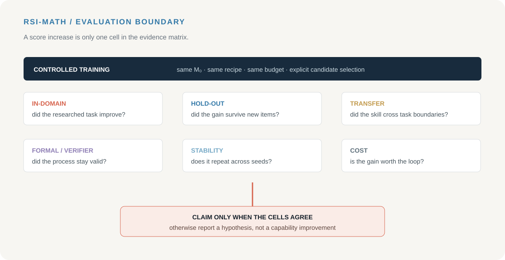

RESEARCH BRIEF
一句话定义
从失败中诊断能力缺口，从缺口中构造可验证数据，从数据中训练候选模型，再用受控评测检查真实迁移；每一轮都留下失败样本、假设、数据版本、验证记录和成本账本。
COMPLETED PROJECT 01 · REASONING DATA · DETAILED STUDY
RSI-Math 已完成一套 5 步失败诊断与递归数据改进闭环：从数学推理轨迹中定位能力缺口，生成并验证针对性训练数据，再通过共同初始化、hold-out、迁移和成本记录评估干预质量。项目交付重点不是堆题，而是把“失败—诊断—数据—训练—评测”做成可复用协议。
RESEARCH BRIEF
从失败中诊断能力缺口，从缺口中构造可验证数据，从数据中训练候选模型，再用受控评测检查真实迁移；每一轮都留下失败样本、假设、数据版本、验证记录和成本账本。
COMPLETED DELIVERABLES
已完成 5 步闭环、5 类失败 taxonomy、4 类数据干预、1 套 provenance schema 和 6 个评测维度；每轮保留失败轨迹、诊断、验证、训练和成本记录。
01 / WHY THIS PROBLEM
一个模型可能碰巧得到正确答案，也可能依赖错误的中间等式；也可能在熟悉题型上表现良好，但遇到未见组合、参数变化或形式化检查就失效。若训练数据只保留最终答案，失败的结构信息会被丢掉，后续干预也无法回答“究竟修复了什么”。
结果正确、推理过程可靠、证明可以形式化，是三个不同层级的目标，不能用一个 reward 覆盖。
无差别增加题目可能只带来熟悉度和记忆；诊断驱动的数据应对应一个明确能力缺口。
研究集提升可能来自复用和选择；必须加入未见题型、难度变化、跨任务和多次运行。
02 / THE CLOSED LOOP

03 / FAILURE TAXONOMY
失败分类不是为了给模型贴标签，而是为了决定下一步生成什么数据、需要什么验证器、应该在哪个测试集上观察变化。分类必须保留原始轨迹和证据，避免把 Agent 的事后解释当成事实。
| 层级 | 典型失败 | 可验证证据 | 候选干预 |
|---|---|---|---|
| 表示 / 解析 | 读错变量、条件、图形或符号 | 原题与解析后的结构不一致 | 等价改写、结构化解析、反例配对 |
| 局部计算 | 代数变形、算术或边界条件错误 | SymPy 化简、代入检查、数值反例 | 逐步演算、错误定位、局部修复样本 |
| 策略选择 | 选择不适用的定理或证明路线 | 路线前提不满足，或换题型立即失败 | 路线对照、方法选择题、近邻反例 |
| 全局证明 | 逻辑跳跃、循环论证、漏掉情况 | 证明检查器、反例搜索、分支覆盖 | 完整证明与最小反例成对训练 |
| 迁移 / 可靠性 | 熟题正确，参数变化或形式化时失效 | 跨模板、跨难度、跨任务和多次种子 | 组合迁移集、难度阶梯、独立验证集 |
04 / RESEARCHER–VERIFIER–TRAINER
读取允许的失败反馈，形成能力假设，选择数据操作、来源和预算；不能修改评价集或跳过验证。
检查题目条件、答案程序、证明步骤、反例和证据；验证通过才可进入训练集。
按照固定训练配方从 M0 训练候选模型；训练失败也计入该轮预算。
在研究集、hold-out、迁移集和形式化检查上测量收益，并记录方差和资源成本。
保存每轮计划、数据版本、失败恢复、分数、验证结果和时间成本；历史可影响下一轮策略。
数据污染、答案泄露、验证器绕过、best-of-k 选择和递归停止条件都要显式审计。
字段示例：展示交付协议的记录结构，不代表某一次模型结果。
{
"failure_id": "algebra_0042",
"task": "prove_or_solve",
"trajectory": {"problem": "...", "steps": ["..."], "answer": "..."},
"diagnosis": {"type": "local_algebra", "evidence": ["..."], "confidence": 0.72},
"intervention": {"operation": "counterexample_pair", "source": "verified"},
"verification": {"symbolic": true, "proof": false, "admitted": false},
"provenance": {"eval_id": null, "source_hash": "...", "round": 1}
}
05 / EXPERIMENT PROTOCOL
| 协议项 | 固定 / 变化 | 必须报告 |
|---|---|---|
| 共同起点 | 所有策略从同一个 M0、同一 tokenizer 和训练配方开始 | 初始化哈希、训练步数、学习率、数据量 |
| 干预策略 | 随机扩充、错误针对性、verifier 反馈、混合策略 | 样本来源、操作比例、去重和验证通过率 |
| 反馈权限 | 分数、错误文本、完整轨迹、验证证据做分层消融 | 每个条件看到什么，不能看到什么 |
| 候选选择 | 固定研究集选择，但最终要在独立集合重跑 | best-of-k、选择规则、候选数量和未选候选 |
| 递归轮次 | 预设最大轮数和停止门槛，不允许无限循环 | 每轮增益、负迁移、验证失败和停止原因 |
不让上一轮 checkpoint 变成下一轮的隐藏变量。
样本必须通过程序化或形式化检查才能进入训练。
比较保留研究历史和清空历史的策略。
区分真正提升与从多次候选中挑最好的一次。
在未见题型、难度和组合任务上测迁移。
把训练、验证、推理和人工审计成本一起报告。
06 / GENERALIZATION AND METRICS
| 评测面 | 测量内容 | 成功信号 | 失败解释 |
|---|---|---|---|
| In-domain | 研究过的题型和操作 | 分数上升且验证通过率稳定 | 可能只是熟悉度或数据记忆 |
| Hold-out | 同分布但未参与诊断的题 | 收益不依赖训练样本重合 | 若下降，可能是过拟合或分布偏置 |
| Cross-task | 代数→组合、几何→证明等组合 | 能力在结构变化下保持 | 若只在单任务提升，能力解释更窄 |
| Formal / verifier | 形式化证明、程序检查或反例测试 | 过程可靠性同步改善 | 答案分提升但形式化失败，说明 reward hacking |
| Stability | 多种子、多轮、不同候选选择 | 均值和方差都可接受 | 一次成功可能是 best-of-k 波动 |
| Cost | 数据、训练、验证和 Agent 调用 | 收益 / 成本比可解释 | 小幅提升但成本指数增长，实用价值有限 |

07 / RELATED WORK MAP
08 / RISKS, FAILURE MODES, DELIVERY NOTES
模型学会满足形式检查的表面格式，却没有获得可迁移的证明能力。需要多种检查器、反例和人工抽查。
所有失败都被归成“推理能力不足”，导致数据干预失去针对性。需要保留原始轨迹和可审计证据。
只报告候选中最好的结果，会把 best-of-k 当成单模型改进。必须冻结选择规则并报告全体候选。
上一轮生成的数据和错误解释会污染下一轮。需要 provenance、版本锁和最大轮数。
训练样本来自评价问题或其答案时，分数失去意义。来源搜索、去重和评测隔离必须成为硬门禁。
Agent 调研成本远高于普通训练。要报告总调用、验证时间、训练次数和失败重试，而不是只报准确率。
完成失败 schema、验证器接口、来源记录和污染检查。
完成共同初始化、4 类干预策略和每轮历史记录机制。
完成 hold-out、跨任务、形式化、best-of-k、稳定性和成本六维评测框架。
SOURCES / RESEARCH NOTES